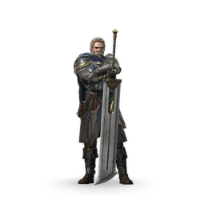
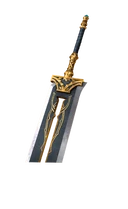
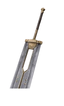

Маркус

Редкость: Epic
Пол: Male
Фракция: Legion
Энергия: Shadow
Класс: Normal
Добыча: Rift Keys and Chests
| Название | Редкость | Изображение |
|---|---|---|
| Генерал Легиона | Обычный | |
| Лидер Багровой Армии | Редкий | |
| Лорд Теней | Эпический | |
| Мастер охоты | Эпический | |
| Рыцарь Золотых Шипов | Сезонный | |
| Магмаркус | Сезонный | |
| Вечная война Генерал | Сезонный |  |
| Название | Редкость | Изображение |
|---|---|---|
| Меч генерала | Обычный | |
| Убийца драконов | Обычный | |
| Храбрость | Обычный | |
| Золотые Шипы Правосудия | Обычный |  |
| Огонь Легиона | Обычный | |
| Осенний гром | Обычный |  |
| Последняя Надежда | Обычный | |
| Теневая Бритва | Редкий | |
| Оникс | Редкий | |
| Цветущая слава | Редкий |  |
| Жнец воспоминаний | Редкий | |
| Магмарион | Эпический | |
| Заповедь Легиона | Эпический |
| Название | Описание | Изображение |
|---|---|---|
| Удача генерала | Атаки Маркуса имеют около 15% вероятности прорвать блок противника. | |
| Воин Тени | Маркус получает больше теневой энергии за свои успешные атаки. | |
| Лорд Теней | Когда Маркус принимает форму тени, он становится временно непобедимым. | |
| Герой Легиона | Когда противник принимает форму тени, Маркус становится временно непобедимым. | |
| Длительная непобедимость | Неуязвимость длится дольше. |  |
| Взрывная воля | Неуязвимость Маркуса заканчивается взрывом. |  |
| Разлом | Маркус получает новую способность тени. Длительность формы тени увеличивается. |  |
| Исцеляющая Неуязвимость | Когда Маркус становится непобедимым, он постепенно восстанавливает свое здоровье. |  |
| Абсолютный контроль | Когда Маркус неуязвим, он наносит дополнительный урон, отражает атаки противника и пробивает блок. |  |
| Всепоглощающий Хаос | Сквозь Глюк активируется в начале раунда. |  |
| Судьба Сопротивления | Герои в вашей команде имеют повышенную защиту от теневых способностей и их альтернатив. | |
| Судьба Жажды | Успешные атаки дают дополнительную теневую энергию героям вашей команды. |